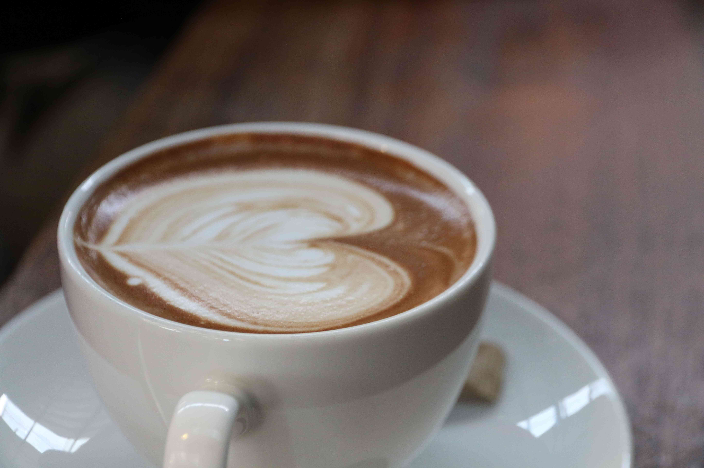
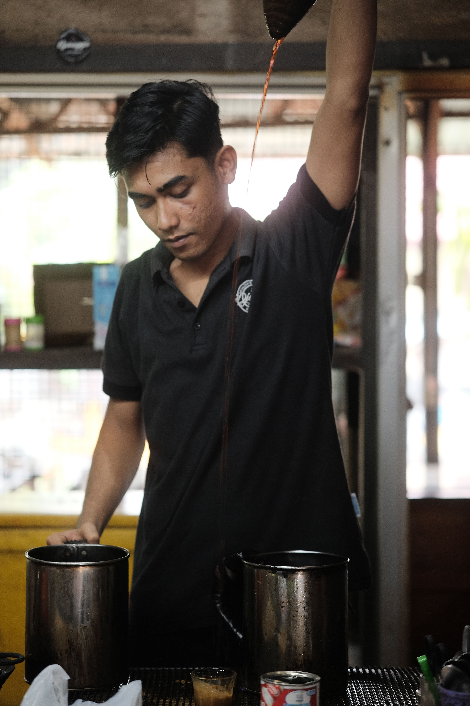

Nusantara Lestari Coffee hadir sebagai wujud kecintaan terhadap kekayaan alam Indonesia, membawa cita rasa
biji kopi terbaik dari seluruh pelosok negeri langsung ke cangkir Anda. Didirikan dengan semangat
melestarikan tradisi kopi lokal, setiap biji kopi dipilah secara manual dan disangrai dengan presisi tinggi
untuk memunculkan karakteristik unik dari setiap daerah asal, mulai dari pekatnya kopi Sumatra hingga
kelembutan aroma kopi Papua. Lebih dari sekadar tempat menikmati kafein, toko kopi ini menjadi ruang
bertemunya para pencinta kopi yang menghargai cerita, kerja keras para petani lokal, dan kualitas rasa yang
autentik.
Dengan konsep ruang yang modern namun tetap mempertahankan sentuhan hangat khas Nusantara, Nusantara Lestari
Coffee berkomitmen untuk menciptakan ekosistem kopi yang berkelanjutan. Toko ini bekerja sama secara
langsung dengan komunitas petani lokal melalui praktik perdagangan yang adil (fair trade), memastikan setiap
sesapan kopi yang Anda nikmati turut mendukung kesejahteraan mereka. Baik untuk memulai pagi yang produktif,
menemani jam kerja yang sibuk, maupun sebagai tempat bersantai di sore hari, setiap sudut tempat ini
dirancang untuk memberikan pengalaman minum kopi yang berkesan dan mendalam bagi siapa saja.
UMKM Pekalongan
Kopi Nusa
Kopi lokal pilihan untuk teman belajar, bekerja, dan berdiskusi.

Our Story

Sejak 2020
Nilai yang Kami Bawa
- Kualitas: memilih biji kopi dan bahan terbaik untuk setiap sajian.
- Kebersamaan: menyediakan ruang hangat untuk bertemu dan berdiskusi.
- Keberlanjutan: mendukung petani serta usaha lokal di sekitar kami.
Kontak singkat
WhatsApp: 08123456789
Email: 08123456789
Jl. Raya Pekalongan No. 123, Pekalongan, Jawa Tengah